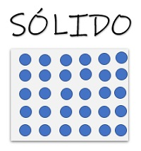
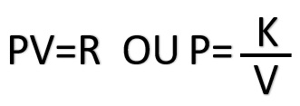
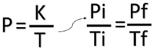

Aprenda a realizar experimentos de forma simples !
por Mateus Alves
LEI DOS GASES
Inicialmente espero que compreenda ao menos o que é o estado gasoso. Quando estamos estudando os estados da maetéria observamos os três principais estados da água que é o sólido, liquido e gasoso. Diante dessas, analises observamos o comportamento das moléculas em seus devidos estados.
Sólido: Observa que as moléculas estão mais próximas com isso, estão organizadas e fortemente unidas com isso temos o exemplo do gelo quando a água esta no seu estado sólido.

um conjunto de imagens mostrando o gelo e a sua organização molecular, com moléculas muito próximas umas das outras
Líquido: Nesse estado os elementos se encontra de forma variada, ou seja, não tem uma forma própria vai se adequando de acordo com o recipiente, e tem um volume constante.
imagem de água líquida e sua organização molecular em que as moleculas são mais distantes umas das outras.
Gasoso: Nesse estado gasoso as moléculas apresentam uma intensa movimentação, pois não tem um volume e formas definidas são variaveis.
imagem demonstrando água no estado gasoso e uma representação das suas moleculas mais espaçadas do que nas outras duas versões
A lei dos Gases criada nos séculos XVVI e XIX por físico-químicos dessa época. Com isso as três leis dos gases são denominadas:
Lei de boyle: Sendo proposta por esse físico e química irlandês Robert Boyle (1627-1691). Apresentando a transformação isotermica dos gases ideais, onde a temperatura permanece constante, enquanto a pressão e o volume do gás variam. Com isso, a equação que expressa a lei é:

imagem das fórmulas usadas na lei de Boyle
PV=R OU P = K/V
P: Pressão da amostra
V: Volume
K: Constante de temperatura.
Lei de Gay-Lussac: Sendo proposta pelo pelo o químico e físico francês, Joseph Louis Gay-Lussac (1778-1850). Apresenta uma transformação isobárica dos gases, quando a pressão é constante e, o volume e a temperatura não sendo diretamente proporcionai. Essa lei é expressa pela a seguinte formula:

imagem da fórmula usada na lei de Lussac
Onde,
V: Volume do gás
T: Temperatura
K: Constante da pressão
(isobárica)
Lei de Charles: Sendo proposta pelo o físico e químico francês Jacques Açexandre Cesar Charles(1746-1823). Essa lei apresenta a transformação isometrica dos gases, onde o volume do gás é constante, entretanto a pressão e temperatura vaõ variar proporcionalmente. A fórmula que expressa a lei de Charles é:
imagem da fórmula utilizada na lei de Charles P: pressão
T: temperatura
K: constanta de volume (depende da natureza, do volume e da massa do gás)
Diante dessas três leis dos gases o físico-quimico francês Benoit Émile Clapeyron (1779-1864). Decidiu unir as três equações, ou seja, unir os três conceitos em apenas uma equação sendo ela: imagem da fórmula feita pelo químico Clapeyron a partir das outras fórmulas Onde,
P:pressão
V: volume
n: número de mols
R: constante universal dos gases perfeitos
T: temperatura
Referência utilizada:
CISCATO, Carlos Alberto Mattoso; PEREIRA, Luis Fernando; CHEMELLO, Emiliano; PROTI, Patrícia Barrientos.
Química: ensino médio. 1. ed. v. 1. São Paulo: Moderna, 2016.
Logo abaixo encontra-se um vídeo explicando o experimento referente ao conteúdo mencionado